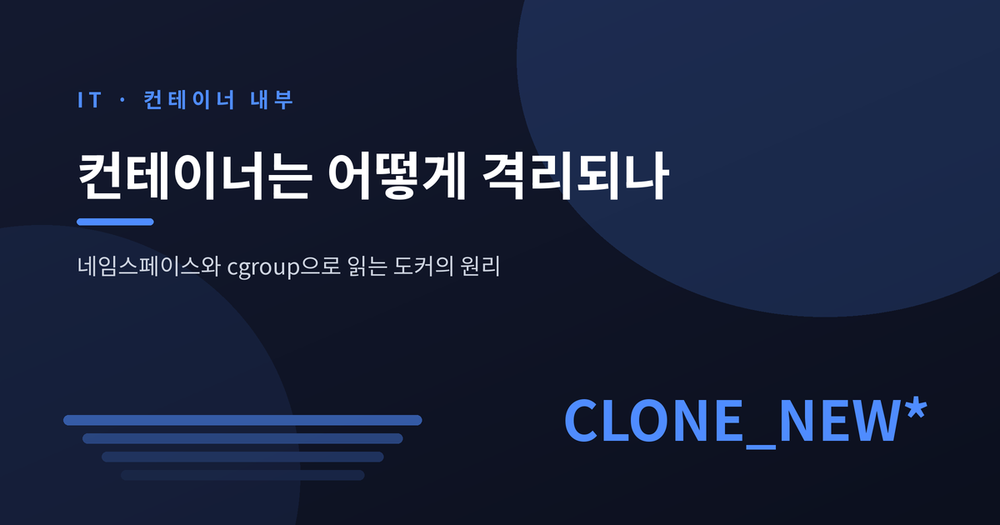
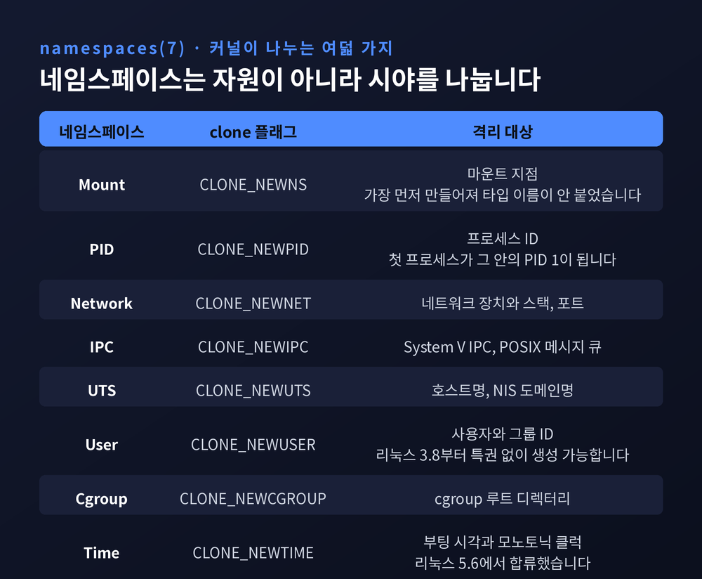
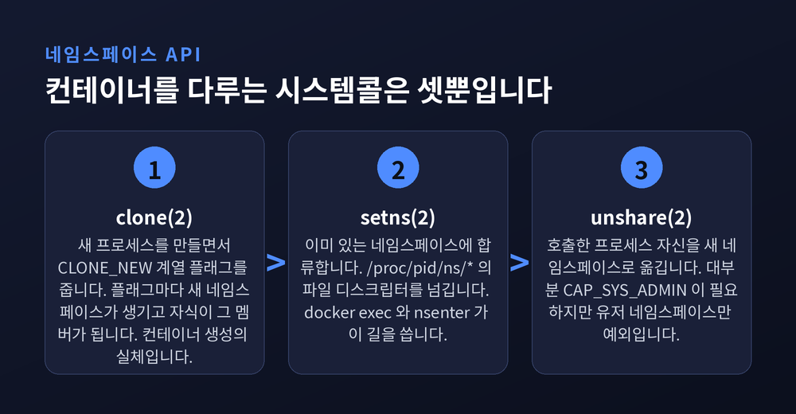
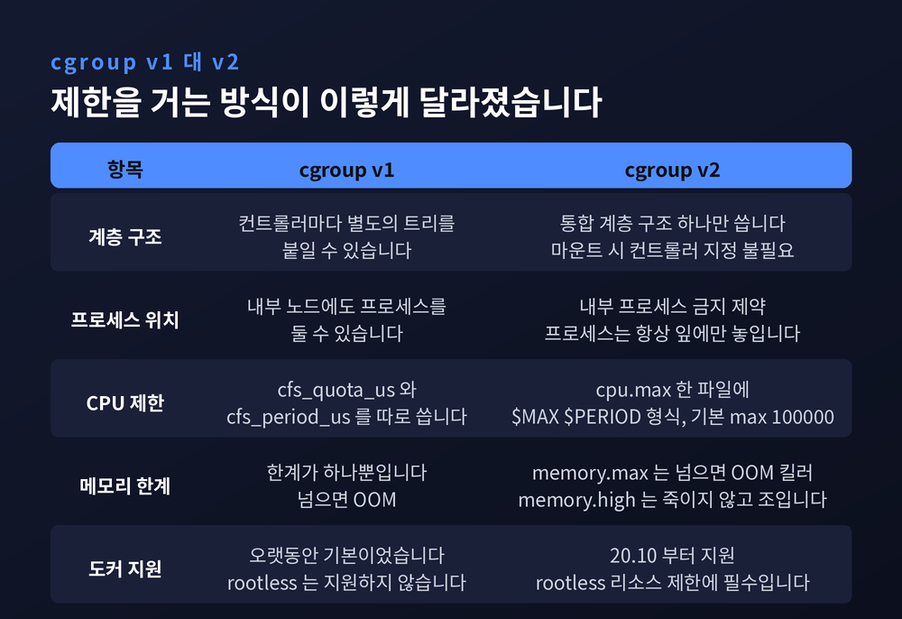
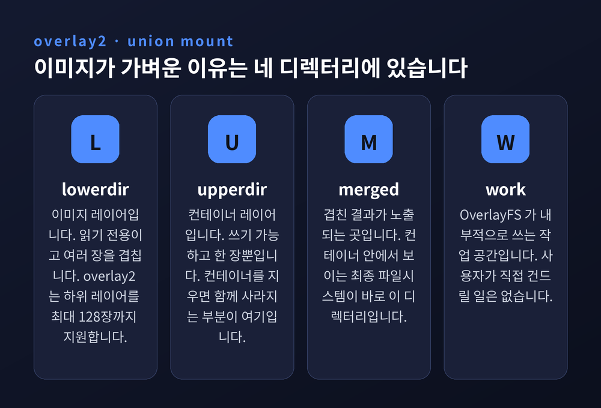
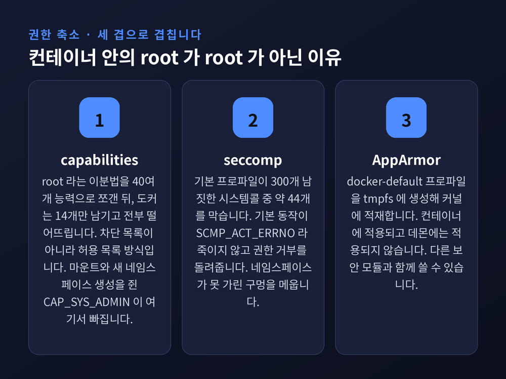
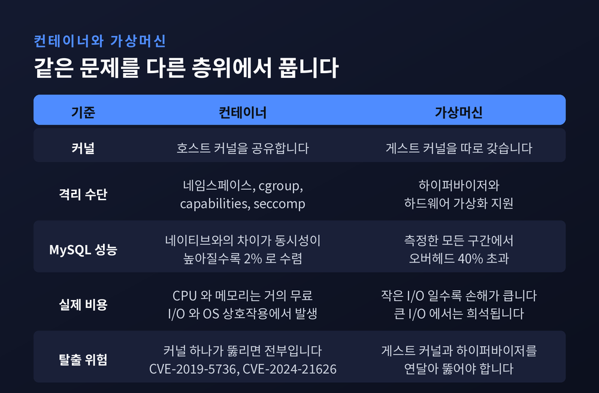

컨테이너는 어떻게 격리되나 — 네임스페이스와 cgroup으로 읽는 도커의 원리

이번 글에서는 컨테이너가 어떻게 격리되는지를 커널 수준에서 정리해 보겠습니다. 도커를 오래 써 왔어도 "컨테이너는 가벼운 가상머신"이라는 설명에서 더 나아가기는 어렵습니다. 그 자리를 네임스페이스와 cgroup, 그리고 OverlayFS로 채워보려 합니다.
컨테이너라는 것은 사실 없습니다
먼저 한 가지를 짚고 넘어가야 합니다.
리눅스 커널에는 container라는 이름의 자료구조가 없습니다. 컨테이너를 만드는 시스템콜도 없습니다.
있는 것은 평범한 프로세스 하나입니다. 다만 그 프로세스가 자신에게만 유효한 세계관을 갖도록 커널이 몇 가지 장치를 걸어둔 것뿐입니다.
그 장치가 세 가지입니다. 무엇을 볼 수 있는지 정하는 네임스페이스, 얼마나 쓸 수 있는지 정하는 cgroup, 무엇을 할 수 있는지 정하는 capabilities와 seccomp입니다. 여기에 파일시스템을 겹쳐 보여주는 OverlayFS가 붙습니다.
도커는 이 장치들을 조립해 주는 도구입니다. 격리 자체는 도커가 아니라 커널이 합니다.
네임스페이스 — 자원을 나누지 않고 시야를 나눕니다
man 페이지의 정의가 가장 정확합니다.
"네임스페이스는 전역 시스템 자원을 하나의 추상화로 감싸서, 그 안의 프로세스들에게 마치 자기만의 독립된 인스턴스를 가진 것처럼 보이게 만든다."
핵심은 '보이게 만든다'는 표현입니다. 자원을 복제하는 것이 아닙니다. 보이는 범위를 갈아 끼우는 것입니다.
현재 리눅스 매뉴얼이 정리한 네임스페이스는 여덟 종류입니다.
마운트 네임스페이스는 마운트 지점을, PID는 프로세스 ID를, 네트워크는 네트워크 장치와 스택과 포트를, IPC는 System V IPC와 POSIX 메시지 큐를, UTS는 호스트명과 NIS 도메인명을, 유저는 사용자·그룹 ID를, cgroup은 cgroup 루트 디렉터리를 격리합니다. 여기에 부팅 시각과 모노토닉 클럭을 격리하는 타임 네임스페이스가 리눅스 5.6부터 합류했습니다.
작은 흔적 하나가 눈에 띕니다. 마운트 네임스페이스의 플래그 이름만 CLONE_NEWNS입니다. 뒤에 타입 이름이 붙지 않습니다. 가장 먼저 만들어졌기 때문입니다. 그때는 네임스페이스라고 하면 마운트 네임스페이스 하나뿐이었습니다.

네임스페이스는 파일로 존재합니다
추상적인 개념처럼 들리지만, 실체는 파일시스템에 있습니다.
모든 프로세스는 /proc/pid/ns/ 아래에 자기가 속한 네임스페이스마다 심볼릭 링크를 하나씩 갖습니다.
$ readlink /proc/$$/ns/uts
uts:[4026531838]대괄호 안의 숫자는 아이노드 번호입니다. 두 프로세스가 같은 네임스페이스에 있는지 확인하고 싶다면 이 링크의 st_dev와 st_ino를 비교하면 됩니다. 리눅스 3.7까지는 하드링크였고, 3.8부터 심볼릭 링크로 바뀌었습니다.
재미있는 성질이 하나 있습니다. 이 파일을 bind mount 하거나 파일 디스크립터로 열어두면, 안에 있던 프로세스가 전부 죽어도 네임스페이스는 살아남습니다. 프로세스 없는 네트워크 네임스페이스를 만들어두는 기법이 여기서 나옵니다.
clone, setns, unshare — 세 개의 시스템콜
네임스페이스를 다루는 API는 사실상 세 개뿐입니다.
clone(2)— 새 프로세스를 만들면서CLONE_NEW*플래그를 주면 플래그마다 새 네임스페이스가 생기고 자식이 그 멤버가 됩니다. 컨테이너 '생성'의 실체입니다.setns(2)— 이미 있는 네임스페이스에 합류합니다./proc/pid/ns/*의 파일 디스크립터를 넘깁니다.docker exec와nsenter가 이걸 씁니다.unshare(2)— 호출한 프로세스 자신을 새 네임스페이스로 옮깁니다.
여기서 권한 조건이 중요합니다. 매뉴얼은 이렇게 못 박습니다.
"clone과 unshare로 새 네임스페이스를 만드는 일은 대부분의 경우 CAP_SYS_ADMIN 능력을 요구한다. 유저 네임스페이스만 예외다. 리눅스 3.8부터는 유저 네임스페이스 생성에 어떤 특권도 필요하지 않다."
이 한 줄이 두 갈래 결과를 낳았습니다. 한쪽으로는 root 없이 컨테이너를 돌리는 rootless 모드가 가능해졌습니다. 다른 한쪽으로는 권한 상승 공격의 진입점이 열렸습니다. 도커의 기본 seccomp 프로파일이 clone을 막으면서도 CLONE_NEWUSER만은 따로 언급하는 이유가 여기 있습니다.

PID 1이 되는 순간 규칙이 달라집니다
PID 네임스페이스는 조금 특별합니다. 단순히 번호를 다시 매기는 데 그치지 않습니다.
새 PID 네임스페이스의 첫 프로세스는 그 안에서 init, 즉 PID 1이 됩니다. 그리고 커널이 PID 1에게만 적용하는 규칙이 셋 있습니다.
첫째, 고아가 된 프로세스가 전부 PID 1에게 재부모화됩니다. PID 1이 좀비를 거둬주지 않으면 좀비가 쌓입니다.
둘째, PID 1에게는 직접 핸들러를 등록한 시그널만 전달됩니다. 나머지는 무시됩니다. SIGKILL과 SIGSTOP은 조상 네임스페이스에서 보낸 경우에만 강제로 전달됩니다.
셋째, PID 1이 종료되면 커널이 그 네임스페이스의 모든 프로세스를 SIGKILL로 죽입니다.
docker stop이 10초를 기다렸다가 결국 강제 종료로 넘어가는 광경을 보신 적이 있으실 겁니다. 대개 원인은 여기입니다. 애플리케이션이 PID 1로 뜬 채 SIGTERM 핸들러를 등록하지 않은 것입니다. docker run --init 옵션이 존재하는 이유이기도 합니다.
cgroup — 격리가 아니라 배분입니다
여기서 오해가 자주 생깁니다. cgroup은 격리 장치가 아닙니다.
도커 공식 보안 문서가 이 구분을 분명히 합니다.
"cgroup은 한 컨테이너가 다른 컨테이너의 데이터와 프로세스에 접근하거나 영향을 주는 것을 막는 역할은 하지 않는다. 다만 일부 서비스 거부 공격을 막는 데는 필수적이다."
정리하면 이렇습니다. 네임스페이스는 보이는 것을 나누고, cgroup은 쓸 수 있는 양을 나눕니다. 서로 다른 문제를 풉니다.
cgroup 코드는 2006년에 시작해 커널 2.6.24에 처음 들어갔습니다. 네임스페이스보다 조금 늦었습니다.
cgroup v1과 v2는 무엇이 다른가
예전에는 컨트롤러마다 별도의 계층 구조를 붙일 수 있었습니다. 지금은 하나로 모읍니다.
v1은 memory, cpu, blkio, pids 같은 컨트롤러마다 각자의 트리를 가질 수 있었습니다. 유연했지만, 같은 프로세스가 컨트롤러마다 다른 위치에 놓일 수 있어 정책을 맞추기가 까다로웠습니다.
v2는 통합 계층 구조(unified hierarchy) 하나만 씁니다. 마운트할 때 컨트롤러를 지정할 필요가 없습니다. 컨트롤러 지원 시점은 memory·io·pids가 리눅스 4.5, cpu가 4.15입니다.
v2가 도입한 두 제약이 설계 철학을 보여줍니다.
하나는 하향식 제약입니다. 자원은 위에서 아래로만 분배되며, 부모에게서 받지 못한 자원은 자식에게 나눠줄 수 없습니다.
다른 하나는 내부 프로세스 금지 제약입니다. 커널 문서의 표현을 옮기면, 자기 프로세스를 갖고 있지 않은 cgroup만 자식에게 도메인 자원을 분배할 수 있습니다. 결과적으로 프로세스는 항상 트리의 잎에만 놓입니다. 부모의 프로세스와 자식 cgroup이 자원을 두고 경쟁하는 애매한 상황이 원천 차단됩니다.
숫자 두 개로 CPU를, 파일 두 개로 메모리를
실제 제한은 파일에 숫자를 쓰는 일입니다.
cpu.max는 값 두 개를 갖는 파일이고, 형식은 $MAX $PERIOD입니다. 기본값은 max 100000입니다. 즉 주기가 10만 마이크로초, 100밀리초입니다. docker run --cpus=1.5는 결국 이 파일에 150000 100000을 쓰는 일로 귀결됩니다.
여기서 CFS 스로틀링이 나옵니다. 100밀리초 구간 안에서 할당량을 다 써버리면, 남은 시간 동안 그 컨테이너는 스케줄에서 밀립니다. CPU 사용률이 한도에 못 미치는데도 응답이 튀는 현상의 배후가 대개 이것입니다.
메모리 쪽은 v2가 한계를 둘로 쪼갠 것이 인상적입니다.
memory.max는 하드 리밋입니다. 커널 문서 그대로 옮기면, 사용량이 이 한계에 닿고 줄일 수 없으면 해당 cgroup 안에서 OOM 킬러가 호출됩니다.
memory.high는 다릅니다. 이 한계를 넘어도 OOM 킬러는 절대 호출되지 않습니다. 대신 회수 압력이 걸리며 해당 cgroup이 스로틀됩니다. 극단적인 상황에서는 한계가 뚫리기도 합니다.
커널 문서는 오히려 memory.high를 주된 제어 수단으로 권합니다. high 한계의 합이 실제 메모리보다 크도록 오버커밋해두고, 전역 메모리 압력이 사용량에 따라 분배하도록 두는 것이 유효한 전략이라고 적어두었습니다. 죽이는 대신 조이기 때문에, 관리 에이전트가 관찰하고 개입할 시간이 생긴다는 논리입니다.
죽이는 한계와 조이는 한계를 나눈 것. v1에는 없던 구분입니다.
도커는 20.10부터 cgroup v2를 지원합니다. rootless 모드에서 리소스 제한을 걸려면 v2가 필요하고, cgroup v1 rootless는 보안상의 이유로 지원하지 않으며 앞으로도 지원하지 않는다고 명시되어 있습니다.

OverlayFS — 이미지가 가벼운 진짜 이유
이미지 레이어 이야기를 자주 듣지만, 그 아래는 union mount라는 오래된 기법입니다.
OverlayFS는 두 디렉터리를 겹쳐서 하나처럼 보여줍니다. 아래쪽을 lowerdir, 위쪽을 upperdir이라 부르고, 합쳐진 모습은 merged라는 디렉터리로 노출됩니다.
도커에 대입하면 이렇습니다.
lowerdir= 이미지 레이어. 읽기 전용이고 여러 장입니다.upperdir= 컨테이너 레이어. 쓰기 가능하고 한 장뿐입니다.merged= 컨테이너 안에서 보이는 최종 파일시스템입니다.work= OverlayFS가 내부적으로 쓰는 작업 공간입니다.
overlay2 드라이버는 하위 레이어를 최대 128장까지 지원합니다.
디스크에는 /var/lib/docker/overlay2 아래에 레이어별 디렉터리가 쌓입니다. 5개 레이어짜리 이미지를 받으면 디렉터리가 여섯 개 생깁니다. 레이어 다섯 개와 l이라는 디렉터리 하나입니다. 이 l 디렉터리에는 축약된 레이어 식별자가 심볼릭 링크로 들어 있는데, 이유가 소박합니다. mount 명령의 인자가 페이지 크기 제한에 걸리지 않게 하기 위해서입니다.
동작은 copy-on-write입니다. 하위 레이어의 파일을 읽기만 하면 복사 없이 그대로 서빙합니다. 수정하는 순간에만 upperdir로 복사한 뒤 고칩니다.
여기에 함정이 하나 있습니다. OverlayFS는 블록 단위가 아니라 파일 단위로 동작합니다. 수 기가바이트짜리 파일의 1바이트만 고쳐도 파일 전체가 복사됩니다. 데이터베이스 파일을 컨테이너 레이어에 두면 안 되는 이유입니다. 볼륨이 존재하는 이유이기도 합니다.

컨테이너 안의 root는 root가 아닙니다
격리의 마지막 축은 권한 축소입니다. 세 겹으로 걸립니다.
첫째, capabilities. 리눅스는 root라는 이분법을 40여 개의 세분화된 능력으로 쪼개두었습니다. 1024번 미만 포트에 바인딩하고 싶다면 root가 아니라 CAP_NET_BIND_SERVICE만 있으면 됩니다.
도커는 이 중 14개만 남기고 전부 떨어뜨립니다. 차단 목록이 아니라 허용 목록 방식입니다. CHOWN, DAC_OVERRIDE, FSETID, FOWNER, MKNOD, NET_RAW, SETGID, SETUID, SETFCAP, SETPCAP, NET_BIND_SERVICE, SYS_CHROOT, KILL, AUDIT_WRITE가 전부입니다.
여기 CAP_SYS_ADMIN이 없다는 점이 결정적입니다. 마운트도, 새 네임스페이스 생성도, 커널 모듈 적재도 여기에 걸립니다. 컨테이너 안에서 root를 얻어내도 할 수 있는 일이 크게 줄어듭니다.
둘째, seccomp. 기본 프로파일은 300개 남짓한 시스템콜 중 약 44개를 막습니다. 기본 동작이 SCMP_ACT_ERRNO이므로 차단 시 프로세스를 죽이지 않고 권한 거부 오류를 돌려줍니다.
차단 사유를 읽어보면 seccomp의 역할이 드러납니다. add_key가 막히는 이유는 "커널 키링이 네임스페이스화되어 있지 않아서"입니다. clock_settime이 막히는 이유는 "시각과 날짜가 네임스페이스화되어 있지 않아서"입니다.
즉 seccomp는 네임스페이스가 미처 가리지 못한 구멍을 메우는 장치입니다. mount, setns, bpf, swapon, create_module 같은 호출도 함께 막힙니다. acct와 quotactl이 막히는 이유는 조금 다릅니다. 컨테이너가 자기에게 걸린 리소스 제한을 스스로 풀어버릴 수 있기 때문입니다.
셋째, AppArmor. 도커는 컨테이너용 기본 프로파일 docker-default를 tmpfs에 생성해 커널에 적재합니다. 이 프로파일은 컨테이너에 적용되며, 데몬에는 적용되지 않습니다.
세 장치가 겹쳐 작동하는 예가 ptrace입니다. AppArmor로 막고, seccomp로 막고, CAP_PTRACE를 떨어뜨려 또 막습니다. 하나가 뚫려도 나머지가 남도록 설계한 것입니다.

그래서 VM과 무엇이 다른가
가장 큰 차이는 하나입니다. 컨테이너는 호스트 커널을 공유합니다. VM은 게스트 커널을 따로 갖습니다.
성능 쪽 근거로는 IBM 리서치가 2015년 ISPASS에서 발표한 비교 연구가 지금도 인용됩니다. Xeon E5-2665 2소켓 16코어, 램 256기가바이트 서버에서 커널 3.11, Docker 1.0, QEMU 1.5.0으로 측정한 실험입니다.
MySQL을 SysBench로 돌린 결과가 이렇습니다.
"Docker는 네이티브와 비슷한 성능을 보였고, 동시성이 높아질수록 차이가 점근적으로 2%에 수렴했다. KVM은 오버헤드가 훨씬 컸고, 측정한 모든 구간에서 40%를 넘었다."
다만 논문의 결론 부분이 더 중요합니다. 컨테이너와 VM 모두 CPU와 메모리에는 사실상 오버헤드가 없고, 영향을 받는 것은 I/O와 OS 상호작용뿐이라는 관찰입니다. 오버헤드가 I/O 연산마다 추가 사이클로 나타나기 때문에, 큰 I/O보다 작은 I/O가 훨씬 크게 손해를 봅니다.
논문은 도커 자신의 대가도 지적합니다. 당시 기본 드라이버였던 AUFS를 두고, 도커처럼 파일시스템 위에서 가상화하는 방식과 KVM처럼 블록 계층 아래에서 가상화하는 방식의 차이가 드러난다고 적었습니다. 그래서 파일시스템이나 디스크를 많이 쓰는 애플리케이션은 볼륨으로 우회하라고 권합니다. NAT 오버헤드는 --net=host로 없앨 수 있지만, 그러면 네트워크 네임스페이스의 이점을 포기하는 것이라고 덧붙입니다.
2015년 실험이고 AUFS 기준이라는 점은 감안해야 합니다. 지금 기본 드라이버는 overlay2입니다. 그래도 레이어드 파일시스템이 I/O에 비용을 매긴다는 구조적 결론은 여전히 유효합니다.
격리의 한계 — 커널은 하나뿐입니다
좋은 점만 적을 수는 없습니다.
도커 공식 문서가 스스로 인정하는 문장이 있습니다. 컨테이너에 주어지는 기본 capability와 마운트 집합이 불완전한 격리를 제공할 수 있으며, 커널 취약점과 결합되면 특히 그렇다는 것입니다.
실제로 두 번의 큰 사건이 있었습니다.
CVE-2019-5736은 runc 1.0-rc6 이하가 대상이었습니다. 파일 디스크립터 처리 실수를 이용해 /proc/self/exe를 경유하면 호스트의 runc 바이너리를 덮어쓸 수 있었습니다. 결과는 호스트 root 획득입니다. 수정은 우아했습니다. /proc/self/exe가 가리키는 대상을 메모리에 통째로 복사한 사본으로 만들어, 덮어써도 호스트가 다치지 않게 했습니다.
CVE-2024-21626, 이른바 Leaky Vessels는 더 최근입니다. runc v1.1.11 이하가 대상이었고, Dockerfile의 WORKDIR 적용 순서 문제였습니다. 특권 호스트 디렉터리의 파일 디스크립터가 닫히기 전에 chdir이 수행되는 틈을 노립니다. 공격 코드가 놀랄 만큼 짧습니다.
FROM ubuntu
WORKDIR /proc/self/fd/[9]
RUN cd ../../../../../ && cat etc/shadow이 두 줄로 호스트 파일시스템에 닿습니다. Wiz의 조사에 따르면 클라우드 환경의 최소 80%에 취약한 인스턴스가 존재했습니다. 패치는 runc v1.1.12, Moby v25.0.2였습니다.
물론 조건은 있습니다. Wiz도 명시하듯, 임의의 실행 중인 컨테이너에서 코드 실행 권한을 얻었다는 사실만으로 이 취약점을 악용할 수 있는 것은 아닙니다. 이미지나 Dockerfile, 실행 인자 중 하나를 공격자가 통제하거나, 누군가 runc exec로 들어오기를 기다려야 합니다.
그래서 업계가 택한 길이 둘로 갈립니다. gVisor는 Go로 쓴 유저스페이스 커널을 두고, Sentry라는 컴포넌트가 시스템콜을 가로채 유저 공간에서 처리합니다. 호스트 커널로 내려가는 호출을 줄이는 방식입니다. Kata Containers는 아예 워크로드마다 전용 게스트 커널을 가진 VM을 띄웁니다. 탈출하려면 게스트 커널을 뚫고 하이퍼바이저까지 뚫어야 합니다.
어느 쪽도 공짜는 아닙니다. gVisor는 Sentry 자체의 취약점을 막지 못하고, Kata는 microVM의 비용을 치릅니다.

정리하면 이렇습니다.
컨테이너는 하나의 기술이 아닙니다. 시야를 나누는 네임스페이스, 몫을 나누는 cgroup, 권한을 깎는 capabilities와 seccomp, 파일시스템을 겹치는 OverlayFS가 각자 다른 문제를 풀고 있을 뿐입니다. 도커는 그 조각들을 한 줄의 명령으로 묶어주는 포장지에 가깝습니다.
이 주제가 남기는 문장은 하나로 압축됩니다. "컨테이너는 벽을 세운 것이 아니라, 커널에게 무엇을 보여줄지 물어본 것이다."
그렇다면 컨테이너를 신뢰 경계로 삼아도 되겠냐고 물으신다면, 저는 조심스럽게 아니라고 답하겠습니다. 벽이 아니라 약속이기 때문입니다. 약속은 커널이 지키는 한에서만 유효합니다.